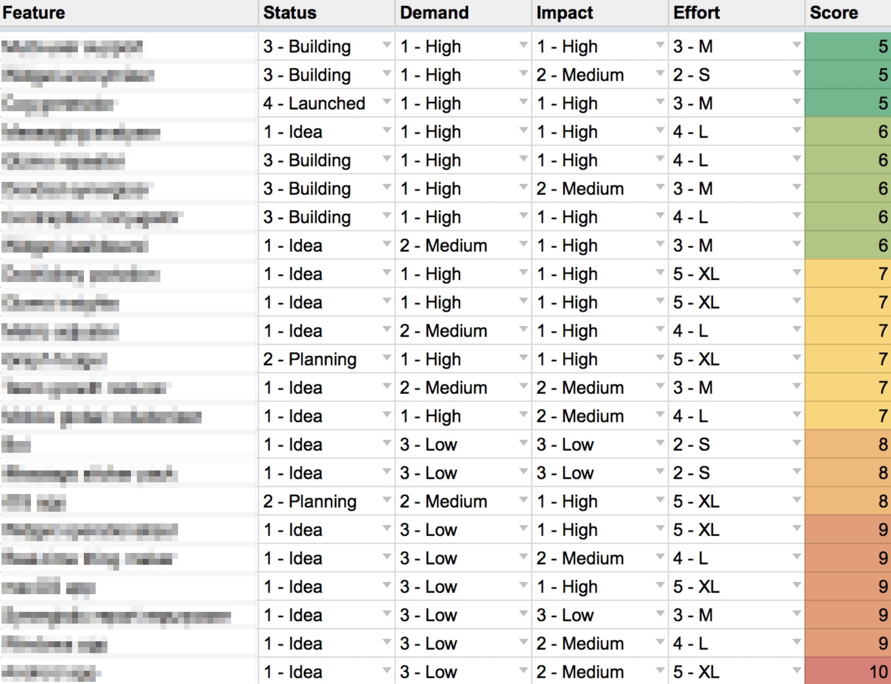
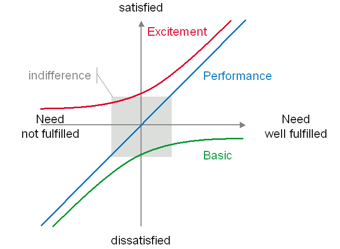

StartUp 的 Prioritization(優先級策略) 和你想的不一樣

在產品開發團隊當中，不管有沒有跑敏捷開發，產品經理無時無刻都會遇到一個問題：如何排定開發項目? 什麼時候會開發完成?
這裏談的不是日常上 Sprint 要開發的功能，而是新創公司在 Early-stage 階段，針對產品還沒有找到 PMF(Product-Market Fit) 之前，擬定 Prioritization(優先級策略) 該注意的幾個重點。
目錄
定義符合市場需求的 MVP, 你該留意的幾件事
－MVP 的定義是什麼？
MVP（Minimum Viable Product, 最小可行性產品） 對於一間公司來說是非常重要的「工具」， 因為能透過它快速地去市場上驗證，從 TA, 客戶那裡獲得反饋並改進產品。這對於 Early-stage 的在新創團隊來說更為重要！不需要投入大量「可能浪費的時間或金錢」，只需要不斷地迭代、快速調整產品方向，創造出既能解決客戶問題同時帶來盈利的產品。
具體來說 MVP 有以下幾個重點：
✅ 產品核心價值：解決客戶的問題並創造公司價值
MVP 這個名詞當中之所以有 “Minimum” 這個單字是有它的涵義的。
我們在開發一個產品前，一定會先確認它的產品核心價值，這個「價值」是對標到你的 TA, 市場，也就是上述提及的 「解決客戶問題讓使用者感受到價值，並同時帶來盈利的產品。」
✅ 驗證商業理念：快速測試市場假說
無論是起初的最小可行性產品，然後迭代成可穩定獲利的產品，這過程當中它們都具備 「讓 TA 體驗到價值」 這件事，這個價值就是透過你的產品「功能」、「服務本身」去體現出來。
但體驗到價值與否，這只有潛在 TA, 客戶才感受得到的事。我們往前推，對於產品團隊來說根本不知道「這功能有沒有價值」，只有在推出產品前定義幾個假說，才能快速測試這個 Business idea(商業理念)。
這個假說(Assumption or Hypothesis) 絕對沒有對錯，但你一定要確保產品推到市場後，它是真的能驗證你起初所定下的商業理念。
✅ 與使用者互動：產品功能是和客戶溝通的渠道
有些產品本身有很多問題，但還是有龐大的死忠客戶；有些產品本身的價格在市面上比其他競品還要高，但還是有客戶願意買單。 想必是這個產品讓客戶體驗到價值，觸及到幾個點：
- 痛點（解決客戶的痛點）
- 癢點（滿足使用者的內心憧憬）
- 爽點（需求能即時滿足）
一定要確保使用者能參與到你的產品，讓使用者去和產品功能互動，有互動才有可能讓客戶體驗到價值得到回饋，透過這樣的正循環並不斷地迭代產品才能提供更好的服務。
－Early-stage 的新創團隊該留意的幾個問題
一個 MVP 它沒有「我全都要」這種事 … 如果什麼都要，那有可能在產品開發出來之前資金就燒完了，又或者團隊對於目標沒有共識，熱情早早被澆熄了（極為常見） 😭 😭 😭
一但在 研究完競品和市場 後，團隊便會開始去策劃產品待開發的功能。 很多新創公司並沒有 MVP 的概念，所以就會發生團隊只有少數 2,3 個人，卻要去打造出市場中百人開發的競品。 最後就會發生老闆不停地壓 deadline、開發團隊不斷地抱怨公司，這很明顯就是團隊目標不一致、溝通不明確的狀況。
在 Early-stage 階段打造 MVP, 實際上可以這麼做：
－從風險角度切入
在充滿不確定性，可以針對市場及資源做初步的風險評估去開發 MVP 再來做迭代，一步步決定產品接下來的發展方向。
針對一系列地評估後，可以抓 60/30/10 法則來開發：
- 60% 的資源開發風險低、信心程度高，並在短期能快速得到成效、回饋的功能。
- 30% 的資源進行風險高、信心程度低的功能，通常是產品經理和團隊經過 Brainstorming / Negotiation & debating 的決定，是一種長期規劃的賭注。
- 10% 的資源就去做讓團隊會興奮的功能吧！
－差異化的產品
如果什麼都是重點那就代表沒有重點。這句話很熟悉吧？

沒錯，很多團隊在開發產品的功能時，都是直接把市場上所有競品的功能「再做一次！」，然後重新包裝推到市場上。
今天如果要打造市場上差異化/突破性的產品，絕對不是這麼做，更不是把所有待開發的功能列為 High and Must have 的順位。
比較好的做法是分析完競品後：
- 清楚知道競品在哪個環節沒有優勢
- 團隊本身的超能力(擅長處理哪些問題)是什麼，並規劃到產品的功能
－做對選擇並做正確的事
- 堅持只做 Must have 的功能，並且對標到你要解決的核心問題。
- 不要擴張團隊。在找到 PMF 之前根本沒本錢做這件事，只有公司開始成長才需要擴張團隊。
- 列下你想學習到的東西，透過這個問題又學習到什麼？Sometimes you win, sometimes you learn. 不論結果是好、是壞，都有值得讓你成長的地方。
- 不要沈溺 MVP 產品上的功能，應該把功能當作只能解決一次性問題，只有這樣才能拓寬思路不被既有的想法給捆綁著 - Think out of the box.
- Conscious Learning. 有意識地做每件事情，不僅僅是頭腦清醒，而是真的知道你在做什麼！避免在一些起不了作用的事情上花太多時間。
專注問題，而不是 Solution

福特汽車的創辦人 Henny Ford 去問客戶：「你需要什麼樣的交通工具？」幾乎所有人的答案都是：「我要一匹更快的馬」。很多人聽到這個答案，於是立馬跑到馬場去選馬配種，以滿足客戶的需求。但是 Henny Ford 卻沒有立馬往馬場跑，而是接著往下問。
Ford：「你為什麼需要一匹更快的馬？」
客戶：「因為可以跑得更快！」
Ford：「你為什麼需要跑得更快？」
客戶：「因為這樣我就可以更早的到達目的地。」
Ford：「所以，你要一匹更快的馬的真正用意是？」
客戶：「用更短的時間、更快地到達目的地！」
然後 Henny Ford 不僅弄了一台汽車來滿足客戶需求，更讓汽車在美國普及化。
身為產品經理的我對於這個真實故事一直有著很大的啟發：
- Henny Ford 之所以不是去馬場挑一匹健壯、跑更快的馬，是因為他專注在 Problem Space(客戶問題), 而不是單純的 Solution Space(解決方案)。
- 客戶的意見非常重要，但若只依靠客戶的意見，就做不出創新/突破性的產品。
- 客戶想要的產品、功能，很多時候自身也想像不出來、說不出口，這需要創意/生活經驗/美好的體驗，才有可以能想像出來，等做出來以後，客戶會說：「這就是我的需求」！
千萬不要這麼做
－不要打造瑞士刀
👨🏿💼：「如果你能決定要做哪個功能，在我們目前的產品上會先開發哪一個功能呢？又為什麼是個功能？」
🧔🏻：我會先做 A 這個功能，因為它是這個產品的主要核心功能，而且跟公司的 Vision(願景) 也比較符合。目前產品正持續的成長，也拓展到不同的市場，不過回推到幾年前，這個功能可以解決客戶最主要的痛點。
這是我在某次產品經理面試時的其中一個問題之一（面了近 3 小時, 還畫了 Flowchart, Wireframe 把整個功能邏輯給理出來），最後也得到了 offer。
從我自己的經歷和身邊看到的例子，很多創辦人都期望打造出一個像瑞士刀般的產品，認為只要功能涵蓋的領域、層面越廣，就一定能創造出需求，不過現實是殘酷的，等到團隊資金快燒完那一天只能摸摸鼻子四處去接案。
－不要「盲目」地做一個跟隨者
不管你今天是在紅海、藍海市場，無論競爭者的多寡，都不應該「盲目」地去跟隨競品，看什麼抄什麼，尤其是在團隊剛成立的時候！
若你真的要做一個跟隨者，那就做好一個 Conscious follower(有意識的跟隨者)：
- 為什麼競品會開發這個功能？
- 市場上客戶的需求、反饋到底是什麼？
- 我們的 Vision 跟這個功能有什麼連結性？
- 團隊資源不足的情況下該怎麼開發出這樣的功能？
如果今天團隊是有意識並且快速地去跟隨競品，那麽即使在紅海市場中也能夠佔有一席之地。
－客戶要什麼，做就對了?
在產品還沒有找到 PMF 之前，有客戶試用產品/解決方案，這時團隊一定是歡天喜地為這個產品歡呼， PM, AM(Account Manager) 為了 Customer Retention Rate(客户留存率), 當客戶每次提出需求都是馬上點頭答應，或是老闆無情地隕石要求，便立即投入團隊資源去做開發，這在團隊當中是一個很大的致命傷，如果能解決問題倒還好，但如果不經思索直接去解決客戶當下的問題，最後發現客戶要的不是這個，既無法解決實際的問題，三番兩次後團隊也會開始不信任你 …
# 來看個例子:
# 今天客戶說他想要把優惠券上的立即訂購 30% 的字體從 12 px 改為 18 px 而且要 bold(粗體字)
在客戶提出問題時，首先要能定義問題，你才能去研究解決問題的方法，並且分辨出需求根源是哪一種類型：
- Must have(需要) 還是 nice to have(想要)
- 產品功能跟底層需求的 Correlation(相關性) 以及 Causation(因果性)
我們來看一下這個需求彼此的關係：
- 客戶想要提高訂單量，增加營收(目標)
- 把字體變大來提高營收(需求)
如果你不經思考可能也會覺得蠻合理的，不過真的是這樣嗎？
功能跟目標需求只有 Correlation 並沒有直接的 Causation, 層層剖析後這麼做的方式會不會更好一點：
- 修改優惠券的文案內容，同時放上主要折扣的商品圖片
- 寄送優惠訊息給忠誠會員、曾經買過類似商品的會員
- 追蹤實際成效
後者感覺上做了比前者還要多的工去解決客戶問題，但它實際的 impact 一定比前者大很多，更不用說持續迭代的複利效應。
對於客戶來說，能得到獲益、滿足的地方絕對不是產品功能，除非這個功能真的真的真的解決很大的問題！
BTW, 在產品還沒找到 PMF 之前, nice to have 的功能應該是越少越好 !!
小心使用這些優先級框架
從少數幾人的新創公司到成千上萬人的大公司，在產品功能上的優先順序通常會倚賴幾個優先級框架，像是：
- RICE：RICE score = Reach(觸及人數) x Impact(影響力) x Confidence(信心程度) / Effort(工作量及困難度)
- KANO：定義出 4 種不同層級的使用者需求 — — 基本型需求（Basic, Must-Be）、期望型需求（Performance）、興奮型需求（Delighter）
- MoSCoW：定義 4 種不同層級的使用者需求 — — Must have（一定要有）、Should Have（應該要有）、Could have（可以做）、Won’t have（不一定能做）
這幾種方法，該用哪一個呢？如果你目前在新創團隊，而且還沒找到 PMF, 那我建議用 KANO 就好！

為什麼？
雖然這些框架各有它的特點，但就我的經驗 KANO Model 最能體現出用戶需求以及滿意度！持續運行一陣子，目標專注在讓 5 個、10 個客戶滿意，必能幫助團隊儘早找到 PMF.